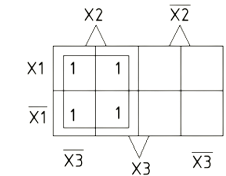
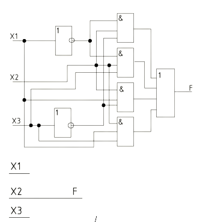

Минимизация логической
формулы
методом Карно-Вейча.
формулы
методом Карно-Вейча.
Минимизация целесообразна, так как логическая схема начальной формулы больше логической схемы конечной формулы.
1. Минимизация логической формулы от трех аргументов методом Карно-Вейча.
2. Минимизация логической формулы от четырех аргументов методом Карно-Вейча.
1. Минимизация логической формулы от трех аргументов методом Карно-Вейча
Минимизация осуществляется по следующим шагам:
1. Заполняется таблица истинности.
2. По таблице истинности записываем совершенную дизъюнктивную нормальную форму(СДНФ)
3.Используя совершенную дизъюнктивную нормальную форму(СДНФ) заполняем карту Карно (сколько слагаемых в СДНФ, столько единиц будет в карте Карно) по определенным адресам.
4. В картах Карно осуществляем склейку (объединение единиц в группы)
Правила склейки:
За минимальное число склеек необходимо склеить все единицы (без пустых клеточек или ноликов). Чем больше в склейке клеток, тем лучше. Объединять можно по одной, две, четыре, восемь, шестнадцать и так далее (2n). Объединять клетки можно по горизонтали, вертикали, квадратом, прямоугольником, по краям, по углам, но не по диагонали. Склейки могут пересекаться.
5. Записываем результирующую минимизированную формулу по правилам: Сколько склеек в карте Карно, столько и слагаемых в формуле. Каждая склейка по очереди проецируется на каждый аргумент. Если проекция склейки захватывает область как прямого аргумента, так и инверсного, (одного и того же), то они взаимно уничтожаются и в формулу не записываются. Если проекция склейки захватывает область: Прямого аргумента, то он так и записывается без инверсии в формулу. Инверсного аргумента, то он записывается с инверсией в формулу. Каждый аргумент является сомножителем в колбаске. 6. По минимизированной формуле строим схему результата и проверяем минимизацию на правильность и целесообразность. Пример 1: F1=(X1) ̅&X2&(X3) ̅V(X1) ̅&X2&X3VX1&X2&(X3) ̅VX1&X2&X3
 В карте Карно для трех аргументов восемь клеток, для двух аргументов четыре клетки, для четырех аргументов шестнадцать клеток.
В карте Карно для трех аргументов восемь клеток, для двух аргументов четыре клетки, для четырех аргументов шестнадцать клеток.
2. Минимизация логической формулы от четырех аргументов методом Карно-Вейча.
1. Минимизация логической формулы от трех аргументов методом Карно-Вейча.
2. Минимизация логической формулы от четырех аргументов методом Карно-Вейча.
1. Минимизация логической формулы от трех аргументов методом Карно-Вейча
Минимизация осуществляется по следующим шагам:
1. Заполняется таблица истинности.
2. По таблице истинности записываем совершенную дизъюнктивную нормальную форму(СДНФ)
3.Используя совершенную дизъюнктивную нормальную форму(СДНФ) заполняем карту Карно (сколько слагаемых в СДНФ, столько единиц будет в карте Карно) по определенным адресам.
4. В картах Карно осуществляем склейку (объединение единиц в группы)
Правила склейки:
За минимальное число склеек необходимо склеить все единицы (без пустых клеточек или ноликов). Чем больше в склейке клеток, тем лучше. Объединять можно по одной, две, четыре, восемь, шестнадцать и так далее (2n). Объединять клетки можно по горизонтали, вертикали, квадратом, прямоугольником, по краям, по углам, но не по диагонали. Склейки могут пересекаться.
5. Записываем результирующую минимизированную формулу по правилам: Сколько склеек в карте Карно, столько и слагаемых в формуле. Каждая склейка по очереди проецируется на каждый аргумент. Если проекция склейки захватывает область как прямого аргумента, так и инверсного, (одного и того же), то они взаимно уничтожаются и в формулу не записываются. Если проекция склейки захватывает область: Прямого аргумента, то он так и записывается без инверсии в формулу. Инверсного аргумента, то он записывается с инверсией в формулу. Каждый аргумент является сомножителем в колбаске. 6. По минимизированной формуле строим схему результата и проверяем минимизацию на правильность и целесообразность. Пример 1: F1=(X1) ̅&X2&(X3) ̅V(X1) ̅&X2&X3VX1&X2&(X3) ̅VX1&X2&X3

Так как таблицы истинности совпали, то минимизация верна.

Минимизация целесообразна, так как конечная схема меньше начальной. 2. Минимизация логической формулы от четырех аргументов методом Карно-Вейча.
Таблица 1 - Истинность и тд прочее
| X1 | X2 | X3 | Fн | Fк |
| 0 | 0 | 0 | 0 | 0 |
| 0 | 0 | 1 | 0 | 0 |
| 0 | 1 | 0 | 1 | 1 |
| 0 | 1 | 1 | 1 | 1 |
| 1 | 0 | 0 | 0 | 0 |
| 1 | 0 | 1 | 0 | 0 |
| 1 | 1 | 0 | 1 | 1 |
| 1 | 1 | 1 | 1 | 1 |
Таблица 1 - Истинность и тд прочее
| X1 | X2 | X3 | Fн | Fн |
| 0 | 0 | 0 | 1 | |
| 0 | 0 | 1 | 1 | |
| 0 | 1 | 0 | 0 | |
| 0 | 1 | 1 | 1 | |
| 1 | 0 | 1 | 1 | |
| 1 | 1 | 0 | 1 | |
| 1 | 1 | 0 | 1 | |
| 1 | 1 | 1 | 0 |